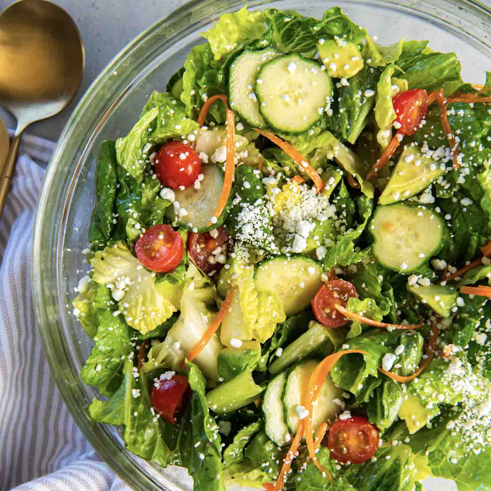

Salad

Description
A salad is a dish consisting of a mixture of small pieces of food, usually featuring vegetables or fruits. It can be served as an appetizer, side dish, or main course. Salads often include a variety of ingredients such as leafy greens, tomatoes, cucumbers, carrots, and can be topped with dressings, nuts, seeds, cheese, or proteins like chicken or tofu. They are known for being fresh, healthy, and versatile, allowing for endless combinations to suit different tastes and dietary preferences.
Ingredients
- Mixed greens (lettuce, spinach, arugula)
- Cherry tomatoes
- Cucumber
- Red onion
- Carrots
- Bell peppers
- Avocado
- Feta cheese or goat cheese (optional)
- Nuts or seeds (e.g., almonds, walnuts, sunflower seeds)
- Dressing (vinaigrette, ranch, Caesar, etc.)
Steps
- Wash and dry all the vegetables thoroughly.
- Chop or slice the vegetables into bite-sized pieces. For example, halve the cherry tomatoes, slice the cucumber and red onion, and shred the carrots.
- If using avocado, cut it in half, remove the pit, and scoop out the flesh. Slice or cube it as desired.
- In a large salad bowl, combine the mixed greens with the chopped vegetables.
- If desired, crumble feta cheese or goat cheese over the top of the salad.
- Add nuts or seeds for extra crunch and nutrition.
- Drizzle your choice of dressing over the salad. Start with a small amount and add more as needed to avoid overdressing.
- Toss the salad gently to ensure all ingredients are evenly coated with the dressing.
- Serve immediately as a fresh appetizer, side dish, or main course.
Home